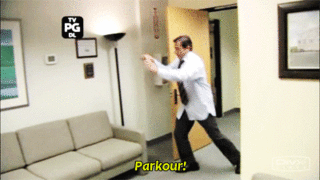

A Bit About Me...
I'm an engineer turned data analyst turned analytics developer. After living in 4 different cities I'm currently settled in Vancouver Canada while working for Unbounce. I made the switch from telecom to SaaS over 2 years ago and it's been an incredible ride. These are exciting times; we're able to provide instantaneous software access to users and collect real-time behavior and usage data to evolve the product and better meet users' needs. This potential is what got me hooked on software data :) Next to my need to create data stories, I have a passion for going to places I've never been before and taking an unnecessary amount of photos. I've been to 10 countries over the past 3 years and still powering through my bucket list. Oh—and I have an unhealthy obsession with waterfalls ...
WHY all the things...
Ever since I watched this TED talk I've become more "Why" driven. With that in mind, for the rest of this application, I'm going to explain why I'd be grateful to work for Buffer, why this opportunity gets me excited and why I feel like we might fit well together!
Challenging the Status Quo
"we’ve experimented seemingly every day with new elements of work that once seemed immutable"
The above statement is from this blog post. Buffer is inspiring others by experimenting; setting the new standards and sharing your knowledge with the world. The captivating thing is how it's engraved in the Buffer values, on your "About Us" page and on the hiring page. You're dedicated to challenging the status quo. I have a fear of heights, but that doesn't stop me from standing near a cliff! I'm not afraid of making myself uncomfortable and pushing through limits previously untouched. It's what inspires me... what you're doing is a rare find and I'd love to have that inspiration every day!
It's all about the people
The factors that affect how attached an employee is to their company differ from one person to another. Working with amazing people is a super important factor for me. I know it's a bit hard to gauge while applying for a job but I started by reading the team page and pretty quickly noticed the incredible amount of positivity and diversity. The words "people" and "team" kept coming up a lot; I wanted to make sure I'm not imagining it so I did a quick word cloud... and it turns out I wasn't!
I Feel Most "At Home" When I'm Travelling
I've moved around so much in the last few years that the word "home" has a different meaning for me than most others. Our team at Unbounce has recently started trying to work remotely. We've been steadily getting better at it, and it's helped me to realize the potential improvement this lifestyle could have on my wellbeing. I'm hoping to jump right into fully remote work, and Buffer could possibly help me learn how to do this best.
Why Me?
Attitude, experience and some mad gif skills...
I Grew Up in a Family of 7 Engineers
That's right—every single person in my family is an engineer! Our dinner conversations were around computer networks and satellite communication. Being analytical sometimes feels like part of my DNA because of how I was raised :) It's something I think is key to being a successful data analyst.
I’m All About That SaaS
It's been 2.5 years since I joined Unbounce. I've worked with Customer Success, Marketing, BI, Engineering, Operations, and Product, as well as been involved in our Churn and Agency Taskforces. I've become quite familiar with the SaaS space, its metrics and have been heavily using SaaS products on a daily basis. Growing with Unbounce from 35 employees to over a hundred has been a priceless experience! It wasn't just about analyzing data, but also training internal data consumers and building a strong data-driven culture in the company. It's been an interesting challenge to solve, but we've definitely made a lot of progress!
Sense.io
Segment.io
Google Analytics
Google Tag Manager
Intercom
Totango
Kiss Metrics
Domo Analytics
Mode Analytics
MySQL
Javascript
HTML & CSS
Rails
Node.js
R
HiveQL
I'll Hit the Ground Running!
I've always been up to doing whatever's needed to get jobs done in the most efficient way :) I've enjoyed working heavily with multiple BI tools similar to Looker, so it feels like the transition could be smooth. I aspire to be a generalist and I've been lucky enough to work on diverse projects: from pricing, churn, feature adoption, user personas, roadmap planning, upselling, Customer Success performance, to growing the data warehouse, setting up web events tracking, 3rd party tools integrations and developing an event bus. Throughout these projects, I was exposed to lots of tools—some of which I've listed here :)
Why Data?
For the Love of the Unknown
I'm an explorer at heart ♡
A data story, at the end of the day, answers a question. A question that will help determine how the product develops, how to talk to customers or whether what you've been building is what customers actually need. Working with data helps me help everyone venture into the unknown and be comfortable making their decisions now that they're data-driven or data-informed. It feels great when I get to explore and play around with the question or problem as if it's a puzzle—the more unknowns there are, the more fun it is!
That's it...
This may be the longest job application I've ever written :) I hope you enjoyed reading through this as much as I enjoyed making it. Really looking forward to hearing back, I'm eager to learn more about Buffer and share more of my story!
+1 647 864 1452
ahmedrad@gmail.com
Here are some more visuals
Me when I don't get the job...

Me when I do get the job...

My dancing skills...

My office parkour skills...
My first attempt at a gif...
My second attempt...